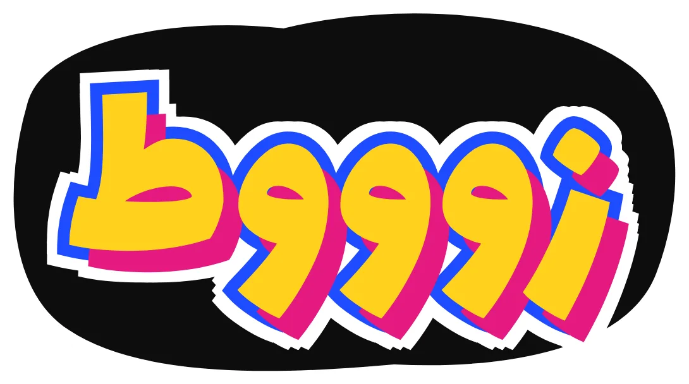
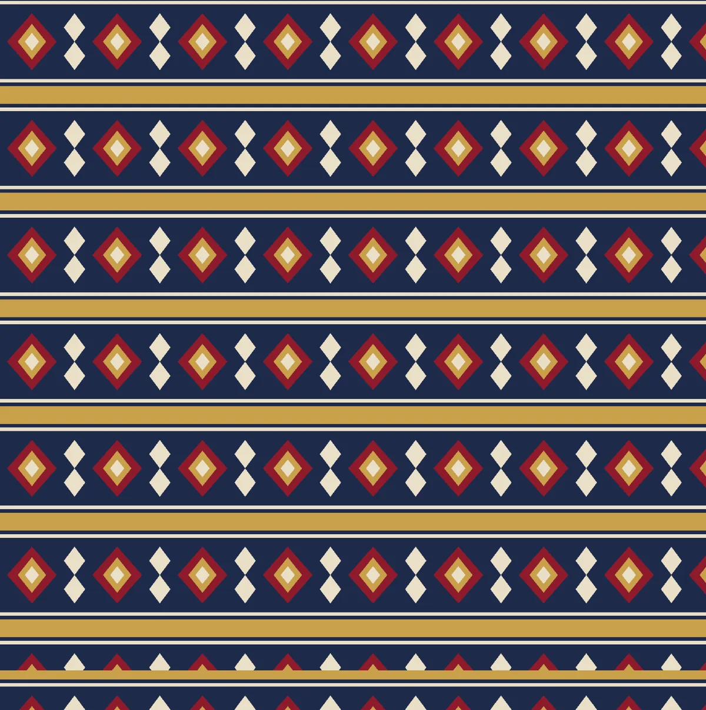
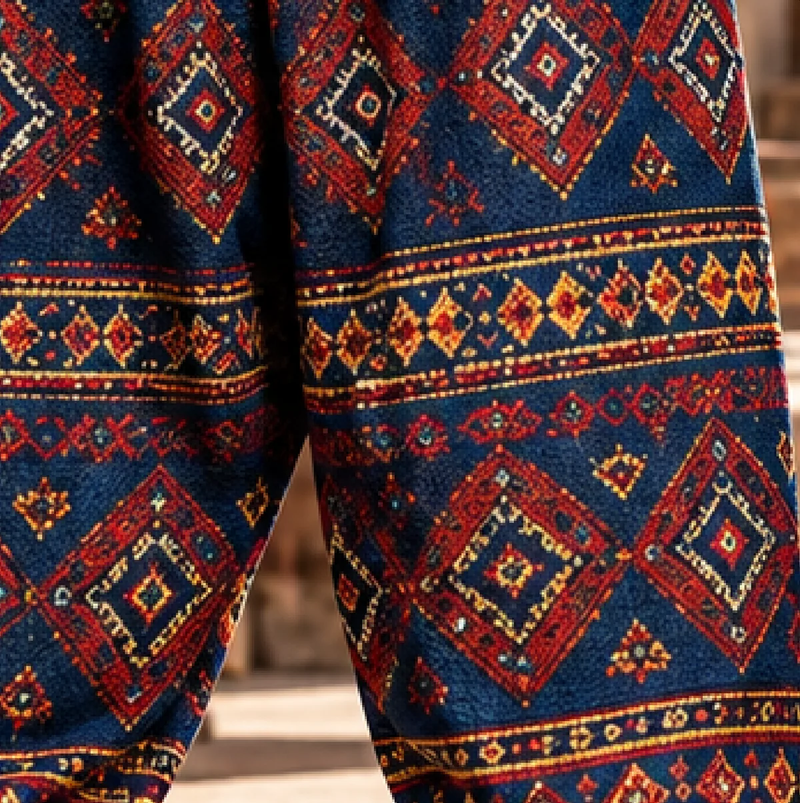
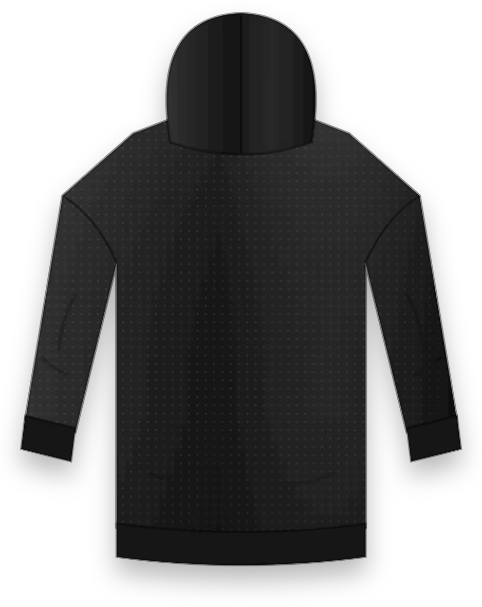
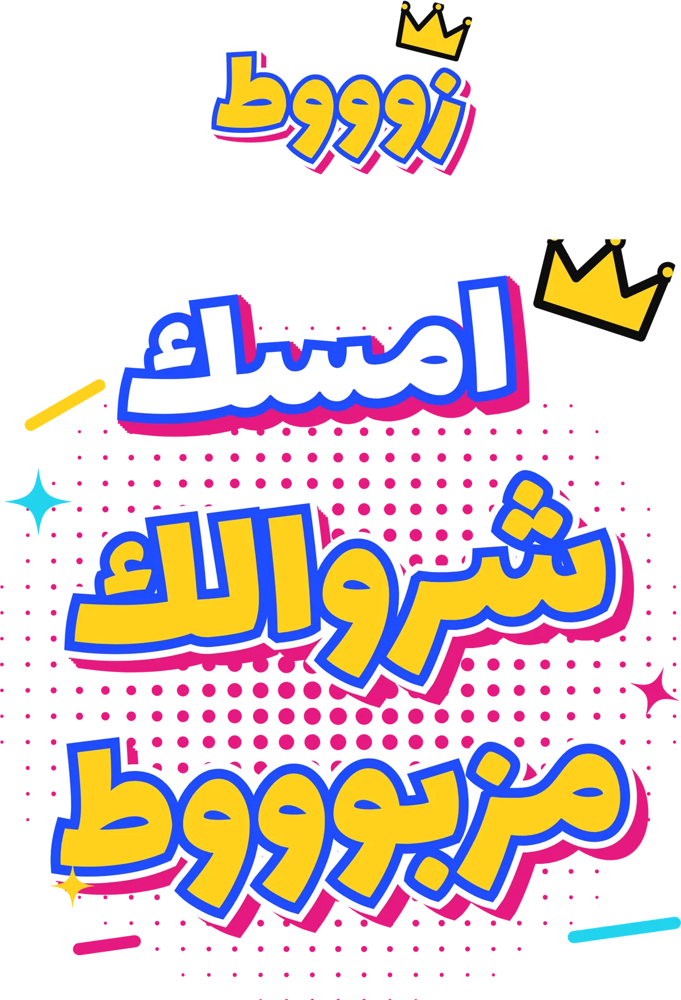
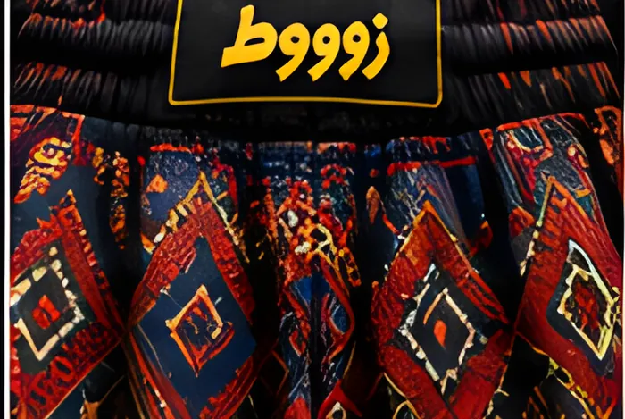
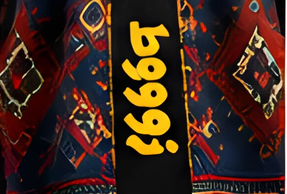
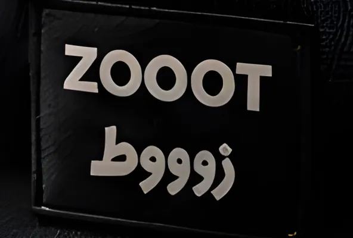
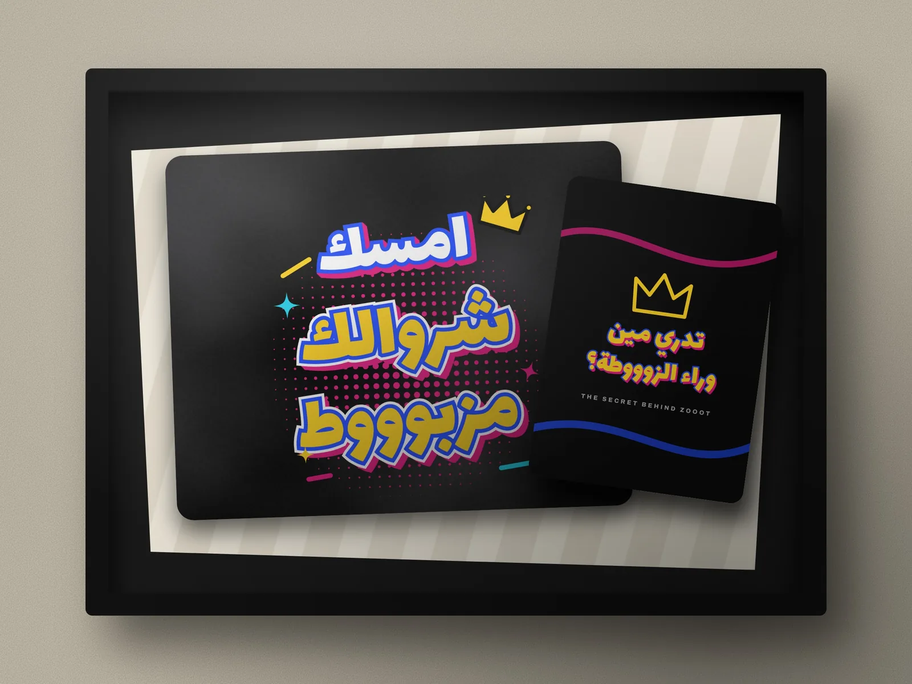

THE STORY · ISSUE 01 · THE LOUD LAUNCH
وراء
الزوووطة
زوووط من تصميم شذى وسارة الغامدي: هودي أوفرسايز، شروال من أقمشة السوق الشعبية بقصّته التقليدية، وكلمة وحدة على الظهر تقول المزاج. العدد الأول — The Loud Launch — يفتح الإصدار الأول DROP 001.
THE ICONIC BACK · SYSTEM
قواعد التوقيع

- الموضع
- أعلى الخلف، في المنتصف بين الخياطتين الجانبيتين، تحت الحزام بمسافة قصيرة.
- الحجم (مقترح)
- يملأ عرض الخلف تقريبًا (≈ 30–34 سم لمقاس L) ولا يتجاوز حدود القماش. يُثبَّت على عيّنة النمط.
- اللون
- لون التعبئة يُسحب من الهودي أو من أفتح لون في النقشة؛ الحد والظل للتباين مع النقشة.
- التنفيذ
- طباعة شاشة على القماش قبل القص، أو DTF للكميات الصغيرة، أو تطريز للإصدارات الخاصة.
THE ICONIC BACK · COLORWAYS
نفس الكلمة...
بألوان كل إطلالة
COLORS & FABRICS · 01
نظام الألوان
اضغط على اللون ينسخ كوده. الأكواد مرجع للشاشة — والطباعة تُطابق Pantone على عيّنات القماش الفعلية.
ألوان كل إطلالة
COLORS & FABRICS · 02
أقمشة السوق


مهم: النقوش المرسومة مراجع بصرية لعائلات الأقمشة الشعبية المتوفرة في السوق. الخامة الفعلية (التركيب، الوزن، الثبات) تُعتمد من عيّنة المورّد قبل الإنتاج.
COLORS & FABRICS · 03 · TECH
تشريح الشروال
مقترح (قبل المورّد)
قماش شروال قطني أو مخلوط من السوق · حزام مطاطي بعرض مريح مع رباط · كف ريب عند الكاحل · جيوب جانبية عميقة · مقاسات للجنسين من XS إلى XXL.
يُعتمد من المورّد
نوع القماش ونسبته ووزنه · ثبات الألوان بعد الغسيل · قابلية الطباعة عليه · المقاسات النهائية وجدول القياسات.
COLORS & FABRICS · 04 · PRINT
الهودي والطباعة والتشطيب


- القصّة
- أوفرسايز · كتف ساقط · قبعة مزدوجة
- الخامة (مقترح)
- فليس قطني أو مخلوط؛ وزن أخف للمناخ الحار ووزن أثقل للشتاء — يُحدَّد بالعيّنات
- الطباعة
- الظهر: شعار مصغّر (≈ 45%) أسفل الرقبة + عبارة رئيسية · الصدر: شعار صغير
- الأكمام
- اختياري: «ZOOOT» عمودي
تقنيات التنفيذ
للكميات والألوان المحدودة؛ أفضل ثبات وتكلفة عند الكمية.
للتفاصيل الكثيرة والكميات الصغيرة والعيّنات.
للشعار الصغير ولسان الحزام والإصدارات الخاصة.



STATEMENT · PRINT METHODS
كيف تُطبع العبارات
الصور التفصيلية محاكاة رقمية للطباعة على فليس أسود. التقنية النهائية تُعتمد على عيّنة طباعة واختبار غسيل لدى المورّد.
ZOOOT — FOUNDERS SIGNATURE COLLECTION
توقيع المؤسِّستين
القاعدة: «زوووط» هو الشعار التجاري على الملابس من الخارج. توقيع «شذى وسارة — وراء الزوووطة» تفصيل إبداعي في الداخل والتغليف والبطاقات — لا ينافس الشعار على القطعة.

THE SECRET BEHIND ZOOOT
المفاجأة
داخل العلبة
مصممة لتُصوَّر: لقطة الفتح، ثم قلب البطاقة — محتوى جاهز للستوري والريلز.
الحكاية توّها تبدأ...
THIS IS ONLY THE BEGINNING.
ZOOOT — DROP001
تسوّق DROP 001